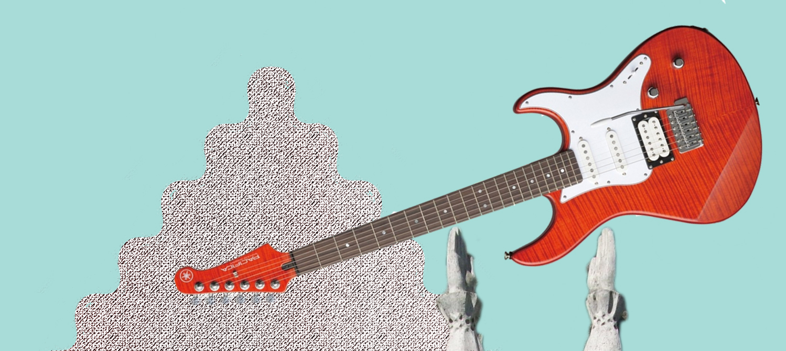

Iki renginio pradžios liko:
Programa
Ketvirtadienis
- Atvykimas
- Įsikūrimas, veiklų planavimas
- Įvadinės linksmybės
- Laužas
- Chillas
Penktadienis
- Rytinė mankšta
- Ramesnės linksmybės
- Valčių lenktynės
- Laužas
- Chillas
Šeštadienis
- Rytinė mankšta
- Ramesnės linksmybės
- Žolės pjovimas su traktoriuku
- Laužas
- Chillas
Sekmadienis
- Rytinė mankšta
- Ramesnės linksmybės
- Aptarimas ir kitų metų renginio planavimas
- Tvarkymasis
- Išvykimas
Vieta
Bružų km. 3, Zarasų raj.
Kviečiame atvykti automobiliu iki festivalio vietos, arba autobusu iki Baibių ir ateiti iki Bružų.
Informacija
- Atvykimas prasideda liepos 16 d. 16 h.
- Turėkite palapinę, miegmaišį, maisto sau ir draugui (bus galima keptis ant laužo arba gamintis namie), higienos ir maudymosi reikmenis, patogią aprangą ir avalynę, tinkančius bet kokiam orui, priemones nuo uodų.
- Jei turite, atsivežkite stalo ar lauko žaidimų, muzikos instrumentų (linksmybių kiekis priklauso nuo individualios išmonės).
- Paskutinis atvykęs kapoja malkas. :)
- Išsidanginame iki liepos 19 d. 18 h.